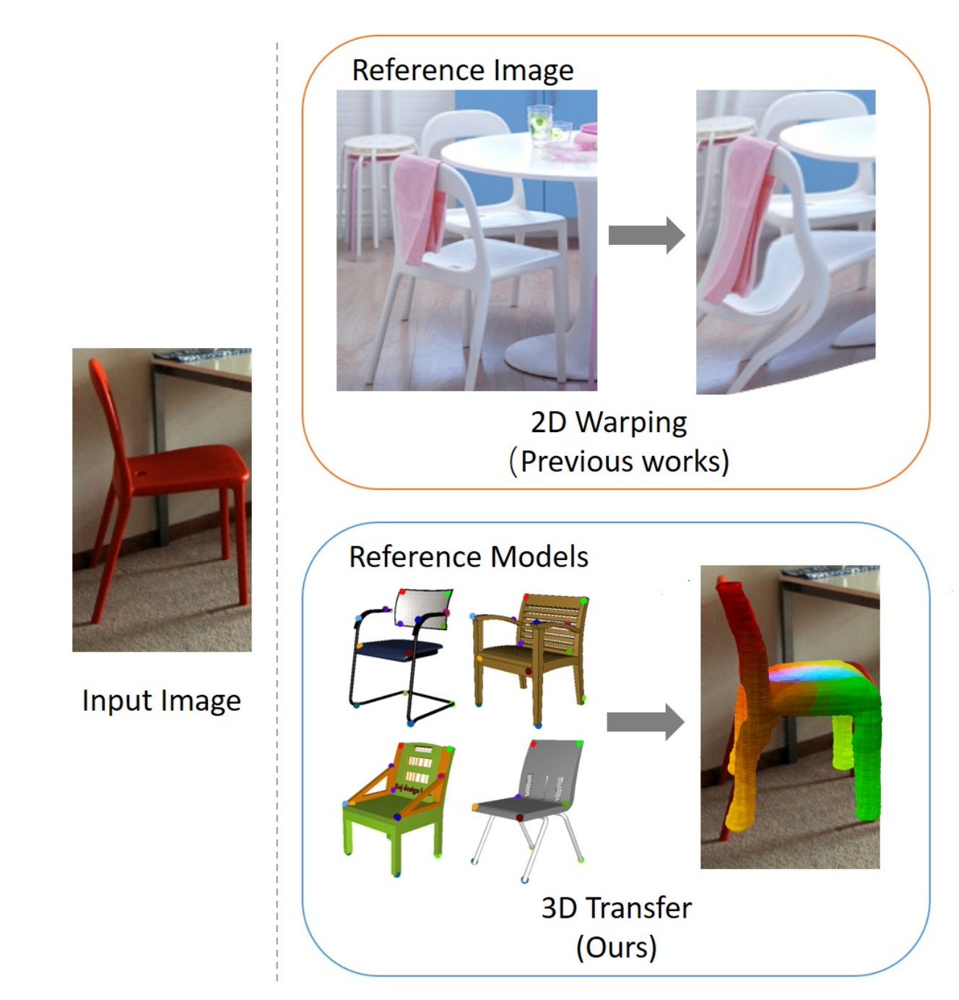
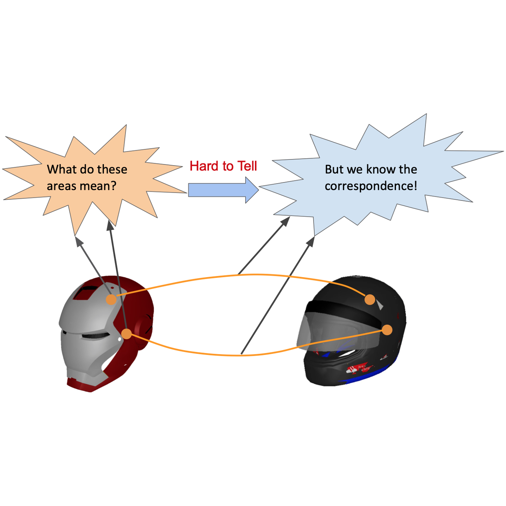
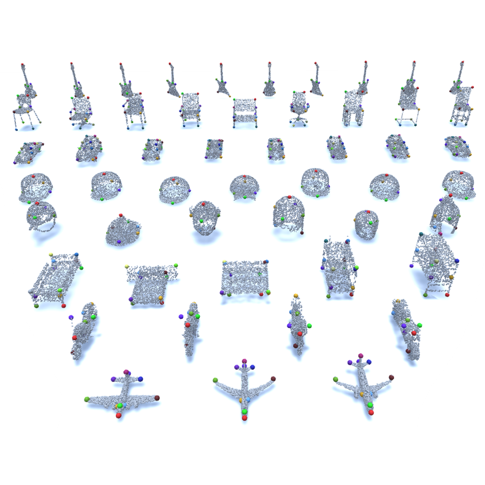
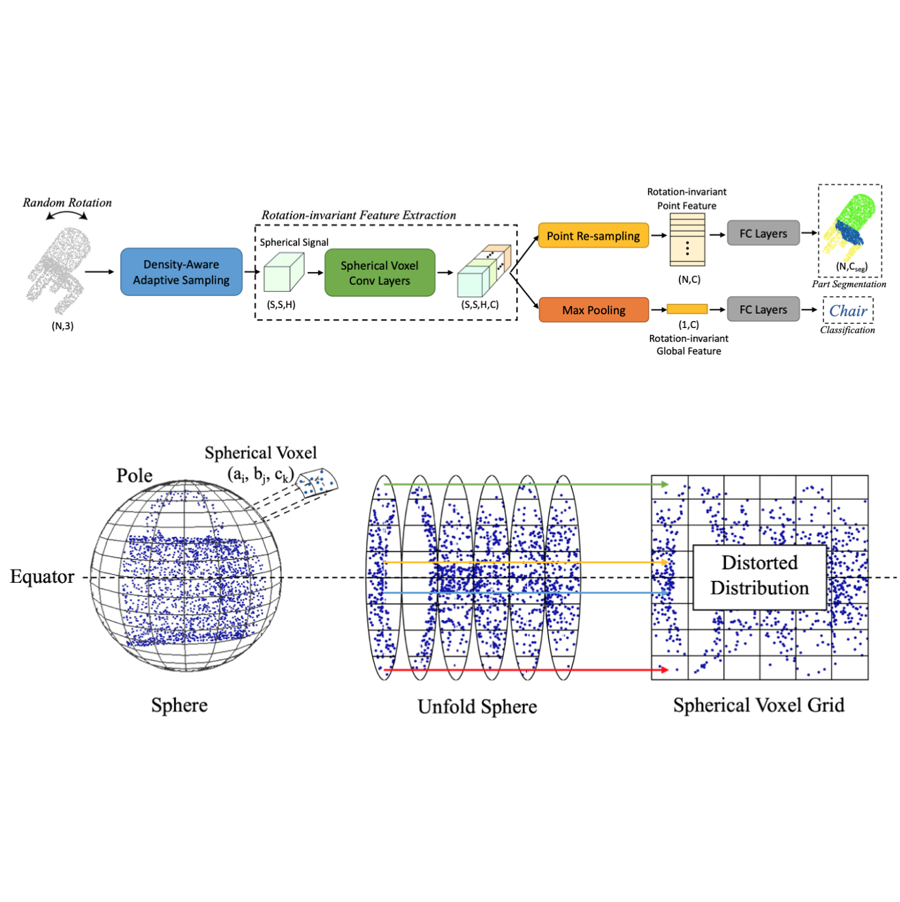

|
Research
I am interested in 3D scene/object understanding. My research experiences focus on the algorithms and applications of deep learning and robot vision, especially on facilitating semantic understanding of 3D scene by finding implicit correspondences between models which will help interacting with environment in the future work.
|
|
Shanghai Jiao Tong University
Department of Computer Science and Engineering
Sep. 2020 - Present
Ph.D. student
|
|
Shanghai Jiao Tong University
Department of Computer Science and Engineering
Sep. 2018 - Sep. 2020
Master of Computer Science and Technology
|
|
|
National University of Singapore
School of Computing
Jul. 2017 - Aug. 2017
Summer Research Program
|
|
|
Harbin Institute of Technology
School of Computer Science and Technology & Honors School
Sep. 2014 - Jun. 2018
Bachelor of Engineering
|
|

|
Understanding Pixel-level 2D Image Semantics
with 3D Keypoint Knowledge Engine
Yang You, Chengkun Li, Yujing Lou, Zhoujun Cheng, Liangwei Li, Lizhuang Ma, Weiming Wang, Cewu Lu
IEEE Transactions on Pattern Analysis and Machine Intelligence (TPAMI), 2021
[paper]
|
|

|
Human Correspondence Consensus for 3D Object Semantic Understanding
Yujing Lou*, Yang You*, Chengkun Li*, Zhoujun Cheng, Liangwei Li, Lizhuang Ma, Weiming Wang, Cewu Lu (*=equal contribution)
European Conference on Computer Vision (ECCV), 2020
[arXiv]
[paper]
[code]
|
|

|
KeypointNet: A Large-scale 3D Keypoint Dataset Aggregated from Numerous Human Annotations
Yang You, Yujing Lou, Chengkun Li, Zhoujun Cheng, Liangwei Li, Lizhuang Ma, Cewu Lu, Weiming Wang
IEEE Conference on Computer Vision and Pattern Recognition (CVPR), 2020
[arXiv]
[paper] [data]
|
|

|
Pointwise Rotation-invariant Network with Adaptive Sampling and 3D Spherical Voxel Convolution
Yang You*, Yujing Lou*, Qi Liu, Yu-Wing Tai, Lizhuang Ma, Cewu Lu, Weiming Wang (*=equal contribution)
AAAI Conference on Artificial Intelligence (AAAI), 2020
[arXiv] [paper] [code]
|
|
Reviewer: NeurIPS 2021 (Datasets and Benchmarks Track).
|
|
Top 10 Graduates of Honors School (10 in 230) • 2018
China National Scholarship, Ministry of Education of P.R. China • 2017
Samsung Scholarship • 2016
Selected Member of HIT Elite Program in Computer Science (Honors School of HIT) • 2015
|
|
{kind=link}